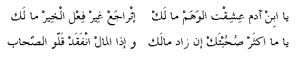

ya bin aadam 'ishiqt el-waham maalak
itraaja' gheir fi'l el-kheir maa lak
ya makthar SoHobtak in zaad maalak
witha el-maal infaqad qallo iSS-Haab
O, son of Adam, what's with you loving dreams
Go back! Nothing is better for you than doing good
You will have many friends if you have money
But when money is gone, so are the friends!
Go
back to Palestinian Songs Page
Go back
to Palestinian Folklore Page